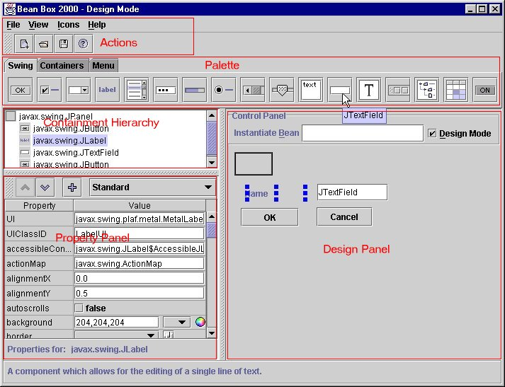
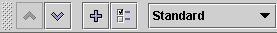

The Bean Builder is a simple test container which allows for the wiring and execution of JavaBeans. The Builder differs from the original BeanBox in the following ways:
The UI has been designed to highlight the use of the Swing components in a production application.

The User interface is divided into several sections:
File Menu - Commands for the managment of designs and the application.
| New - Create a new Design. This command will clear the existing design and sets a new JPanel as the root object. | |
| Open - Opens an existing design. Currently supports XML and BeanScript design | |
| Save - Saves the existing design to a file. If the filename hasn't been selected, then a filename will be prompted. | |
| Load Jar File - Loads the Beans from a Jar file onto the User palette. | |
| Exit - Exits the application. |
View Menu - Commands which effect the display and runtime behavior of the application.
Design Mode - Toggles the design or runtime state of the builder. When this item is checked, you may place and wire up beans. When unchecked, the state of the application is in runtime mode and you may test the behaviour of your design.
View Properties - Toggles the visibility of the property panel.
Icons Menu - Selection of the type of BeanInfo icon to display in the palette.
Help Menu - Invokes online help displays the About Box.
The Palette allows for the selection of the an object n which you can instantiate into the Design Panel.
Moving the mouse over the a palette item will display the BeanInfo short description attribute in the status bar. If the mouse is held over the palette item then a tool tip appears with the BeanInfo name attribute.
You can change the BeanInfo icon representation of the items using the Icons menu.
Selecting a palette item will change the cursor from an arrow to a crosshair. This indicates that the an object of the palette item can be instantiated on the Design panel.
Displays the containment hierarchy of the visual beans. The top level JPanel represents the root of the design. This hierarchy does not display non-visual beans.
Selecting a component in the hierarchy will make it the selected object for the application.
The property pane displays the introspected properties of the selected object. A small status bar is below the table of properties that displays the type of the current object.
The table portion of the property panel contains the list of introspected PropertyDescriptors. Holding the mouse over a cell in the Property column will display a tooltip with a short description of that property. The Value column contains a the value of the property represented as an object. If the type of the object has a defined PropertyEditor, the property editor is loaded into the cell and set to the value.
This pane contains a control bar which allows you to investigate the manipulate the current object.

| Up - Loads the parent of the current object into the Property Panel | |
| Down - Load the selected property into the Property Panel. You can also double click on the selected property. | |
| Add - Places the selected object into the Design Panel for interaction. This is useful for manipulating non-visual Beans. | |
| Customizer - If enabled, this button brings up the associated customizer for the selected object. |
The Combo Box portion of the Property Control Panel allows you to filter the properties based on the PropertyDescriptor attributes. The selected item will only display properties that have the attribute. These properties are documented in java.beans.FeatureDescriptor and java.beans.PropertyDescriptor.
The Design Panel is the place in which applications are assembled. You can place visual Java Beans on the panel and set the location and size of the object by dragging the handles.
This panel is the place where you can set the property value of an object to be another object. i.e., obj1.setFoo(obj2);
This panel also allows the creation of event adapters between two objects.
Select and drag the mouse cursor from the source object to the target object. The first object that the mouse down registers will be the source object. The object that the mouse has been released on will be the target object.
When both objects are valid, then an Interaction Wizard will be presented to define the methods and arguments of the interaction.